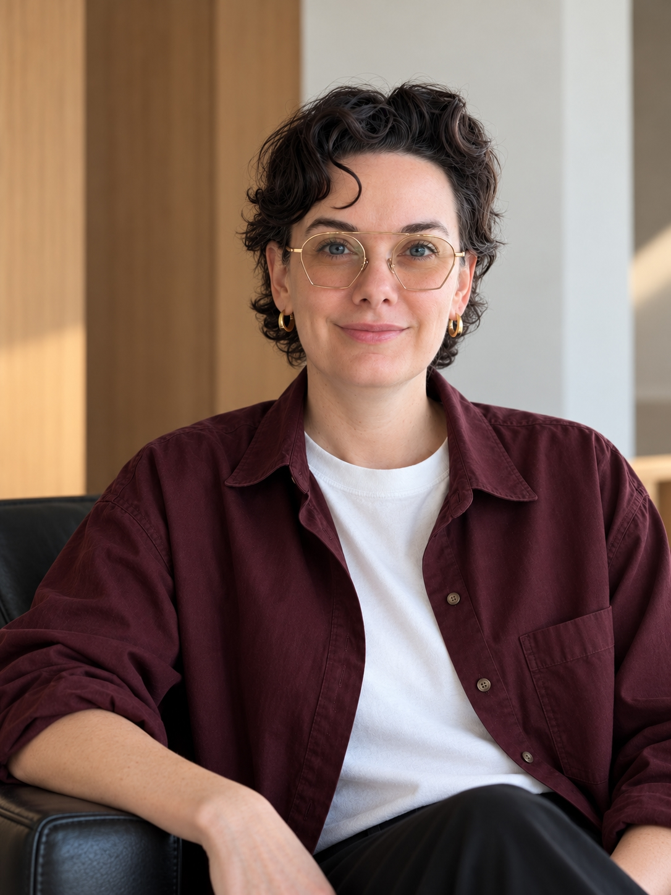

A creative team’s scarcest resource is its attention.
There will always be more work than there is team. The job is to figure out what deserves bespoke attention, what should become a system, and what we can stop doing altogether.
I work with design and marketing leaders to decide where creative effort will have the greatest impact, then build the structure to move the organization forward. That can mean driving a major initiative, resetting priorities, reshaping how work gets done, or building a system so we don’t have to solve the same problem twice.
I’m at my best as a close partner to leaders and the people doing the work. I tend to have a pulse on what’s happening across the business, where things need attention, and what will create momentum.
There will always be more work than there is team. The job is to figure out what deserves bespoke attention, what should become a system, and what we can stop doing altogether.
I’m much more interested in making a good decision reusable. Systems, tools, standards, and enablement let a team’s thinking travel much further than the team itself.
I like just enough process. Enough that people know what we’re doing, who is doing it, and how a decision gets made. Once the upkeep starts becoming its own body of work, I get suspicious.
Good taste helps me make better calls about priorities, resources, and where the team should spend its attention. It also helps me see what needs protecting as work moves through an organization, so the idea that made it good in the first place is still there at the end.

I started out in museums, including the Library of Congress, Brooklyn Museum, and Cooper Hewitt, Smithsonian Design Museum. This was when museums were rapidly figuring out what digital meant for collections, exhibitions, and the visitor experience. I worked on the technology, but I got just as interested in all the new ways of working it required.
From there I went to O/M, a product design agency, where I eventually became a co-founder and partner. I ran projects, clients, operations, and a team of PMs. Running an agency made the relationship between operations and creative quality pretty hard to miss.
Today I bring that perspective to large brand and marketing organizations. I’m part operator, part advisor, and usually the calm person in the room when priorities compete, the path gets messy, or everyone has a slightly different version of what “urgent” means.
Outside work, I’m active in historic preservation and modern architecture circles. I live in Philadelphia, where the layers of architectural history—and a particularly good modernist legacy—give me plenty to study, argue about, and appreciate.